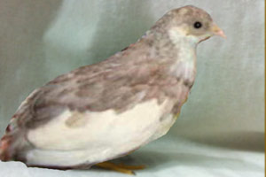

Различные окрасы появляются благодаря:
- Индивидуальной изменчивости внутри самих мутаций. Таким образом, например, заводчики выводят очень темных, почти черных птиц - это вариант мутации "синеголовая".
- Комбинаций двух и более мутаций окраса. Примеры ниже.
- Комбинаций одной мутации окраса и мутации распределения цвета пятнами
- Комбинации двух и более мутаций окраса и мутации распределения цвета пятнами.
Комбинации окрасов (мутаций).
Cinnamon Red Breast - Комбинация красногрудого и осветленного (Red Breast and Cinnamon)
 Петушок Петушок |
 Курочка Курочка |
Сочетание пятнистых мутаций с мутациями окраса
Осветленный пятнистый
|  | |
| Петушок |
Курочка |
Серебристый пятнистый
| Петушок |
Курочка |
Красногрудый пятнистый
| Петушок |
Курочка |
Синеголовый пятнистый
| Петушок |
Курочка |
Природный смокинговый
| Петушок |
Курочка |
Серебристый смокинговый
| Петушок |
Курочка |
Красногрудый смокинговый
| Петушок |
Курочка |
Синеголовый смокинговый
| Петушок |
Курочка |